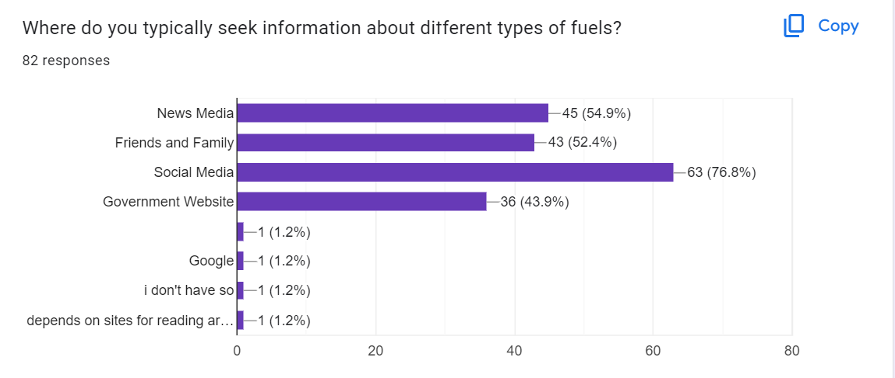
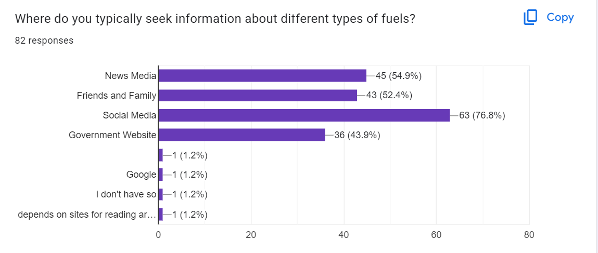

Welcome to the journey of sustainable devlopment, we're not just providing fuels; we're fueling a
movement towards a cleaner and brighter future. Our commitment goes beyond the pump – it's about making
responsible choices for the environment without compromising on performance. Whether you're on the road
or simply curious, explore our eco-friendly fuel solutions and be part of the positive change. Let's
drive towards a sustainable tomorrow together!
Eco-Friendly Fuels
Introduction
▼
In today's world, the way we use energy is causing big problems all around the
globe. The fuels
we usually use are making the environment really sick. This is making the weather go all crazy
and it's hurting nature.
We've been using fuels that come from old things in the ground for a very long time. These fuels
have helped us grow, but they're making the planet really unwell. They let out gases that make
the air too warm, causing lots of bad weather and making nature unbalanced.
But there's some good news! There are these amazing special fuels that don't hurt the planet.
They can help us fix the mess we've made with our usual fuels. These new fuels come from things
like plants, and they don't make the air dirty. Some are like the batteries in our toys, and
they're getting better and lasting longer.
These special fuels are super important because they can stop the Earth from getting too warm
and fix some of the big problems we've made. They come in different types, like fuels made from
plants and even those used to power cars without polluting the air.
The change to these new fuels is a big deal. It's like a promise from all of us to take care of
our planet. This is our way of making sure we live in a healthier and more sustainable world.
Understanding Eco-Friendly Fuels
▼
Understanding these special fuels is really important because they're different from the ones we
usually use. They're much better for our planet. These cool fuels come from things we can keep
using again and again, unlike the ones that can run out and harm the Earth.
They're called eco-friendly because they're kinder to nature. They come from things like plants
or waste and don't make the air and water dirty like our regular fuels do. These special fuels
don't cause as much harm to the environment.
The best part is that they don't run out like the fuels we're using now. They mostly come from
things that keep growing, unlike fossil fuels that will eventually finish. Also, when we use
these special fuels, they make less bad stuff that can hurt the air and water.
Using these new fuels is super important because they can help us take care of our planet.
They're part of a bigger plan to use energy that doesn't make the Earth sick. And if more people
start using these cool fuels, we'll help make our planet healthier for the future.
Environmental Impacts of Conventional Fuels
▼
Eco-friendly fuels are like the good guys in the energy world. They bring a bunch of awesome
things that make our planet a better place to live. One of the coolest things about these
special fuels is that they don't make the Earth sick like regular fuels do. When we use them,
they release fewer yucky things into the air, which helps keep the air clean for us to
breathe.
Regular fuels often create a lot of things that make the Earth too warm. But eco-friendly fuels
are different. They don't add as much to the warming, so they help keep our planet cooler and
safer. This is really important for stopping climate change and making sure our environment
stays more stable for the kids of the future.
The cool thing about these fuels is they come from things we can keep using again and again,
like plants or the sun. Regular fuels can finish and hurt the Earth, but these special fuels
won't run out. That's good news because we can keep using them without worrying about hurting
the planet.
Also, these special fuels are like superheroes in using energy efficiently. They can do more
with less, just like a small battery that powers a big toy for a really long time. This means we
don't waste energy and we use our resources more wisely.
By using these amazing eco-friendly fuels, we're making our planet happier and healthier. They
help us have cleaner air, a cooler Earth, and make sure we're not wasting our resources. With
these cool fuels, we're making a better tomorrow for everyone.
Advantages of Eco-Friendly Fuels
▼
Eco-friendly fuels are like the good guys in the world of energy. They bring a bunch of awesome
things that make our planet a better place to live. One of the coolest things about these
special fuels is that they don't make as much bad stuff that can harm our Earth. When we use
them, they release fewer yucky things into the air, which helps keep the air clean for us to
breathe.
You know how some fuels make a lot of stuff that makes the Earth too warm? Well, eco-friendly
fuels don't do that as much. They're kind of like the planet's superheroes because they help
stop the Earth from getting too hot. That means we can keep our planet cooler and safer.
Another great thing about eco-friendly fuels is that they're made from things that we can keep
using again and again. They come from stuff like plants or the sun, which never run out. This is
different from the fuels we usually use, like oil or gas, which can finish and hurt our
planet.
These special fuels are also really good at helping us save energy. They're super efficient,
meaning they can do a lot more with a little bit of fuel. That's like using one tiny battery to
power a big toy—super cool!
By using eco-friendly fuels, we can take care of our planet and make sure we have enough energy
for a long time. They help keep the air clean, make our planet cooler, and use less fuel to do
more. That's why these special fuels are so great—they make our world a happier and healthier
place for everyone!
Types of Eco-Friendly Fuels
▼
- There are many types of eco-friendly fuels some of listed below
Biofuels
Biofuels are special types of fuels made from living things like plants, cooking oil, or
even
waste. There are a few different kinds:
- Ethanol: It's made from things like corn or sugarcane and used in some cars as a
fuel.
- Biodiesel: This comes from oils in plants or even used cooking oil. It can work
in trucks or
some cars.
- Biogas: This fuel is produced from waste materials, like food scraps or manure,
and can be used
for heating or cooking.
Pros and cons: Biofuels are great because they come from things that we can keep
growing, unlike
oil or gas. But making them can sometimes use a lot of water or land, which might not be
good
for the environment.
Hydrogen as a Fuel
Hydrogen is a really special fuel that we can make using electricity. There are a couple
of ways
to do it:
- Electrolysis: It's like magic! We use electricity to split water into hydrogen
and oxygen.
- Steam methane reforming: This method takes natural gas and turns it into
hydrogen.
- Using hydrogen: It's used in some cars, buses, and even in some buildings for
energy. But
storing and moving hydrogen safely can be a bit tricky.
Pros and cons: Hydrogen fuel offers clean energy but faces challenges such as
carbon emissions in production, energy intensity, and costly infrastructure. Overcoming
these hurdles is crucial for realizing its potential as a sustainable energy source.
Electric Vehicles
These cars use electricity to move. They're getting better because of:
- Batteries: They're like the hearts of these cars, and they're getting stronger
and lasting
longer.
- Charging: There are more places to charge these cars, and they're getting faster
too!
- Different types: Some electric cars use only electricity (BEVs), while others use
both
electricity and a little bit of gasoline (PHEVs). They're all cool because they don’t
make any
pollution while driving, making the air cleaner for everyone!
Each of these eco-friendly fuel types has its good points and things we need to be
careful
about. They're all trying to help make our planet cleaner and healthier for
us!
Case Studies
▼
- Implementation of Biodiesel in Public Transportation
A city's public transportation system sought to reduce its environmental impact and
dependence on traditional fossil fuels. They decided to implement biodiesel, an eco-friendly
alternative made from renewable resources such as vegetable oils or animal fats.
- Implementation:
The transportation company gradually replaced a portion of its diesel fuel with
biodiesel in its bus fleet. They collaborated with local biodiesel producers, ensuring a
sustainable and local supply chain. Educational campaigns were launched to inform the
public about the environmental benefits of biodiesel.
Results:
- Reduced Emissions: Biodiesel implementation led to a significant reduction in
greenhouse gas
emissions compared to traditional diesel, contributing to improved air quality in the
city.
- Local Economic Boost: Collaborating with local biodiesel producers stimulated the
regional
economy and created jobs in the renewable energy sector.
- Positive Public Perception: The public responded positively to the eco-friendly
initiative,
enhancing the company's reputation and ridership.
Challenges:
- Infrastructure Upgrades: The need for modifications to storage and distribution
infrastructure presented initial challenges and required investment.
- Cost Considerations: While biodiesel was competitive in some regions, initial
costs and
fluctuations in feedstock prices required careful financial planning.
Conclusion:
The case study illustrates how the strategic adoption of eco-friendly fuel, such as
biodiesel, can lead to positive environmental outcomes, economic benefits, and improved
public perception. Overcoming challenges requires collaboration between public and
private
sectors and a commitment to sustainable practices.
Real Life Application
▼
- Sweden: This country is doing really cool stuff with biofuels. They use a lot of
waste from
forests and farms to make special fuels for their cars and trucks. It helps keep their
air
cleaner and their cars moving without making too much pollution.
- Costa Rica: They're like nature superheroes! Costa Rica is working hard to use a
lot of
renewable energy. They use things like water, wind, and the sun to make electricity.
This
means they're using more clean energy and helping the environment.
- Tesla: You might have heard of this company. They make electric cars that are
super fast and
don’t need any gas. They're getting more popular, and people really like how they don’t
make
pollution while driving.
- Boeing: This big airplane company is trying to make planes that use biofuels.
They've done
some flights using these special fuels that don’t harm the environment as much as
regular
plane fuels. This is great because airplanes usually use a lot of fuel and make a lot of
pollution.
- Indian Railways: They're taking big steps to use biofuels in their trains.
They've started using
a special type of diesel made partly from plants. This helps their trains move while
causing
less harm to the environment. It's awesome because trains use a lot of fuel, and
using
eco-friendly options helps keep the air cleaner.
- Tata Motors: This company in India is making buses that run on electricity. These
buses are
becoming more common in some cities, and they don’t make any pollution while driving
around.
It's great for the air in the cities because it keeps the air cleaner and healthier for
everyone
These are just a few examples of how different places and companies are using eco-friendly
fuels to help our planet. They're showing us that we can use cleaner fuels and help our
world stay beautiful and healthy for a long time.
Indian and International Surveys
▼
Indian Surveys
Here are some surveys on eco-friendly fuels in India:
- Global survey: India ranked first in a global survey on eco-friendliness with a
score of 62.6.
- IRES 2020: 85% of Indian households have access to LPG.
- Harvard School survey: 30% of fatalities in India are due to air pollution caused
by fossil
fuels.
- 2020 energy mix: 77% of India's electricity generation came from fossil fuels.
American Express survey: Indians want to prioritize spending on sustainable products.
Challenges
▼
- It's Hard to Make New Stuff: Creating these special fuels needs really smart
technology, and
not everyone has that. Making these eco-friendly fuels is like making a secret recipe—only a
few people know exactly how to do it.
Costs a Lot of Money: Changing from regular fuels to these special ones can be
expensive.
The machines and ways to make and use them might need a lot of money, which not everyone
has.
Needs Different Places: Using eco-friendly fuels might need new places to keep them
and move
them around. Not all places are ready for this change because they need special things like
places to charge electric cars or store new fuels.
Not Everyone Agrees: Some people might not like these new fuels or think they're not
good
enough. This can make it hard for everyone to change together.
These things can make it tricky for everyone to start using these cool eco-friendly fuels.
But if we learn more and work together, we can find ways to make these changes easier and
help our planet become cleaner and healthier for everyone!
Future Outlooks
▼
- Bright Ideas to Make Fuels: Scientists and really smart people are dreaming up
super cool
ways to make these special fuels. They're trying things that are like magic to make
better,
cleaner fuels for everyone.
- Finding Cheaper Ways: In the future, using these special fuels might not cost as
much.
People are thinking really hard to make them easier on our pockets, so more of us can
use
these awesome fuels.
- Better Places for Fuels: We might see more places to fill up our cars with these
special
fuels or even new ways to store them. Smart folks are figuring out how to make it super
easy
for everyone to use these new fuels.
- Working Together for Our Planet: More and more friends are learning about these
cool fuels
and starting to love them. As more people like them, it's going to be much easier for
all of
us to use them together.
The future is looking super exciting for these special fuels. People are dreaming big and
working hard to make these fuels better, cheaper, and easier for everyone. It's like a big
team effort to keep our planet happy and healthy!
Policy and Initiatives
▼
- Government all Schemes and initiatives
The Indian government has introduced several schemes to tackle climate change, such
as:
- National Policy on Biofuels: Encourages alternative fuels to lower carbon
emissions.
- Green Hydrogen Mission: Launched by the BJP-led Central government.
- GOBARdhan (Galvanising Organic Bio-Agro Resources Dhan Scheme): Also
initiated by the
BJP-led Central government.
- Green Credit Program, MISHTI, and Amrit Dharohar: Additionally launched by
the BJP-led
Central government.
Other government policies promoting eco-friendly fuels include plans to set up
5,000 CBG
(Compressed Biogas) plants by 2025, offering financial incentives to promote
green fuel
usage, notifying rules for promoting renewable energy via Green Energy Open
Access,
launching the Green Term Ahead Market to facilitate renewable energy sales,
integrating CNG
facilities at retail outlets, setting up Electric Vehicle Charging Stations, and
focusing on
increasing locally produced energy while reducing energy poverty. The energy
policy centers
on developing alternative energy sources, particularly nuclear, solar, and wind
energy.
Conclusion
▼
- Summary of Key Findings
- In India, renewable sources made up about 20.5% of electricity in 2022, aiming to hit a
50% target by 2030.
- Globally, renewables now account for nearly 30% of the power mix, up 10% since 2010.
- In the EU, renewable sources comprised 37.5% of electricity in 2021.
- Investments in clean energy are projected to increase by 24% from 2021 to 2023, driven
by renewables and electric vehicles.
- Solar energy generation worldwide surged by 22% in 2021, marking a record increase of
179 TWh.
- In the U.S., about 81% of energy production came from fossil fuels in 2022, while
renewable sources accounted for around 13.1% of total energy.
 
